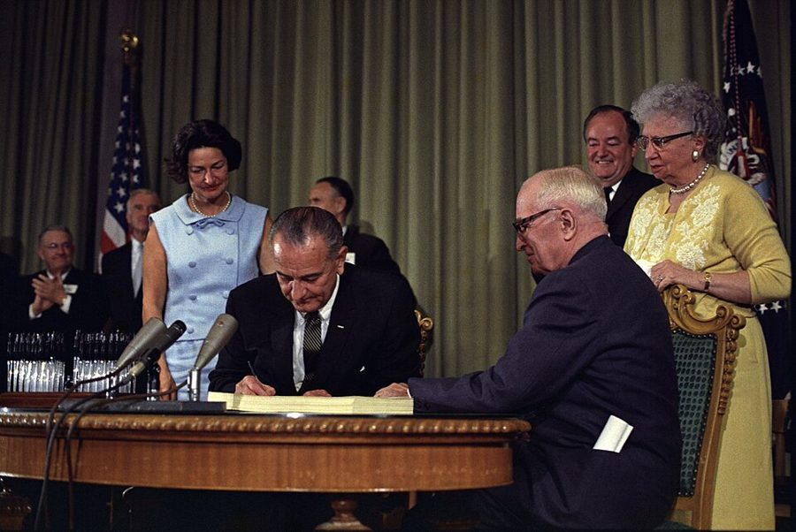
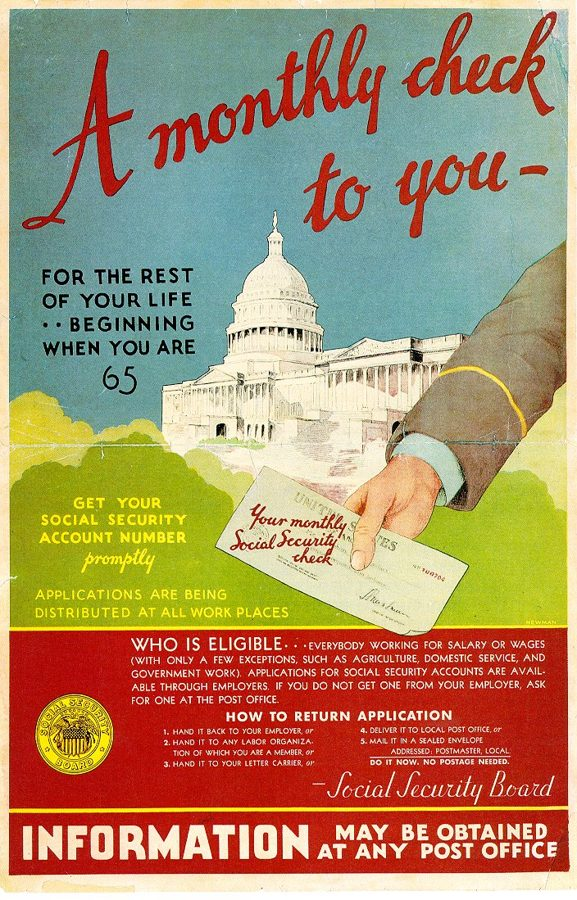
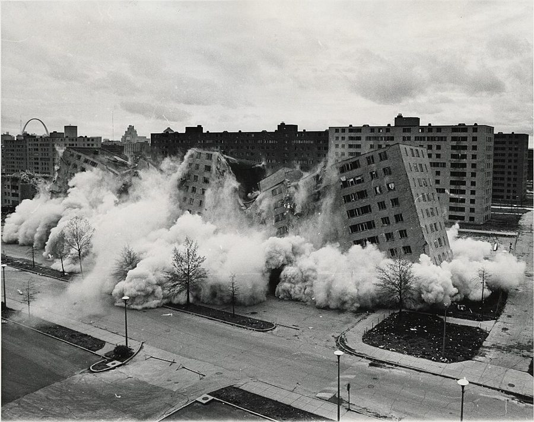
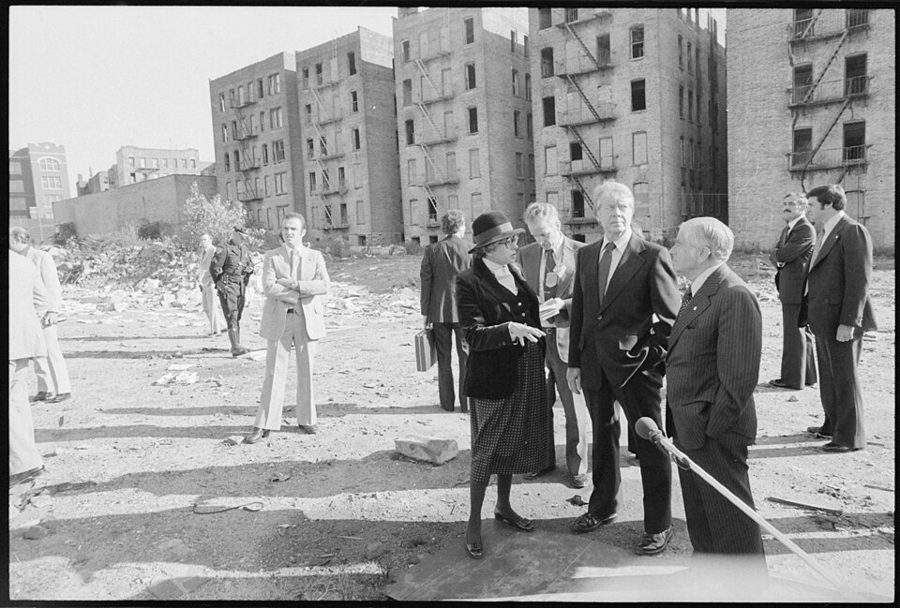

这一章在做什么
这一章从 1932 年罗斯福当选讲起：大萧条和二战让美国人相信政府能把经济管好，计划和国有化退潮以后，政府扩张改走福利和监管两条路。作者挨个检查社会保障、公共援助、住房补贴和公费医疗，说目标都好、结果都差，毛病不在执行，在「花别人的钱、替别人办事」这个结构。他的方案是用负所得税换掉杂乱的福利项目，再逐步结束社会保障。读的时候抓两条线：社会保障算不算保险；四种花钱方式的分类。
1935 年 8 月 14 日，罗斯福签署《社会保障法》（Social Security Act）。身后戴帽子的女子是劳工部长 Frances Perkins，这部法律的主要推手之一。这一章花最多篇幅的就是这部法律后来的样子。美国社会保障署，公有领域，维基共享资源 读之前：先下注
第 1 章说政府该做四件事，第四件是照顾不能对自己负责的人，并说这一条和第三条一样容易被滥用。这一章就是作者眼里滥用的样子。第 3 章刚讲完大萧条怪联储，这一章接着讲大萧条留下的另一份遗产：人们从此相信要靠政府防范「命运的起落」。下一章（平等）会接着谈收入再分配，第 6 章谈教育，所以这里讲福利、养老、住房、医疗，教育只提一句。
美国的社会保障养老金（工资里扣税，退休后按月领钱），总的来说把钱从谁那里转给了谁？
从高收入的人转给低收入的人，越穷领回来的比例越高
基本是自己交、自己领，像一笔强制储蓄
从年轻人转给老人，同时还从较穷的人转给较富的人
从单身的人转给有配偶、有家属的人
交上去的钱被国会挪去填别的窟窿，没留给养老
如果帮穷人的办法只能留一种，下面哪一种最好？
政府盖房子，低价租给穷人
发食品券、医疗卡这类只能买指定东西的补助
按收入直接发现金，自己多挣一块钱补助少一点，但到手总数总在涨
政府出钱办培训、安排公共岗位，让人有活干
政府退出，全交给教会和慈善机构
出发点都很好的福利项目，为什么一个接一个地让人失望，失望之后又要求加钱扩大？毛病出在执行，还是出在手段本身？
作者说社会保障的「税」和「福利」两半单拿出来谁都不会赞成，合在一起却成了新政最得意的成就。他靠什么说服你？§3
四种花钱方式里，福利项目落在哪两种？你所在的单位、你用过的公共服务，各落在哪一种？§4
负所得税为什么必须「取代」现有项目，而不能「再加一个」？§5
作者承认自己的方案眼下通不过。他引的「三样不能同时做到」，对他自己的方案同样成立吗？§6
这一章的论证骨架
这一章前面讲史实，中间讲道理，后面开方子：§1–§2 是历史（新政怎么来、福利国家在德英瑞怎么起步），§3 是四个案例，全章最长，§4 只有一千多词，却是全章的理论核心，§5–§6 是方案和它为什么通不过，§7 收账。§3 最容易读散：四个小标题各自一摊数字，读的时候只问一件事，每个项目的钱最后落到了谁手里。
好心的目标：防范命运的起落 · §1–§2
结果令人失望 · §3
社会保障
公共援助
住房补贴
医疗
先看英国、瑞典、纽约市：钱越花越多，问题没解决
诊断 · §4：花别人的钱，替别人办事
花别人的钱：没理由省
替别人花：没理由求值
再加上：人人想把钱引向自己；花钱就得先强制收钱
方案 · §5
负所得税取代杂项福利
兑现旧承诺，结束社会保障
障碍 · §6：既得利益；补助、激励、成本难兼得
§7 总账：钱浪费了是小事，伤了家庭、激励、资本和自由是大事
本站画的示意图。§2 里俾斯麦和英国的那几页是一段旁支，作者用它说明贵族和社会主义者在「替别人做主」上是一路人。 边读边填：每行一个问题，读到答案就写一两句。只存在你这台设备的浏览器里，别人看不到。
读完了？对照我找到的
转向：从管生产改成管福利和监管；Wallis 说社会主义从想把生产资料社会化，改成想把生产成果社会化。
名实：工资税叫「缴款」；信托基金好像很重要，其实很小；好像各人的福利是自己的缴款换来的。
谁得益：被征地的业主、住进新公寓的中高收入家庭、购物中心的开发商和租户、借机改善周边的大学和教会。
诊断：项目的好处偏向中高收入者，因为穷人不擅长政治争抢；为抢钱花掉的游说等费用是纯浪费。
方案：补助从 3600 降到 3100，总收入从 3600 升到 4100。
障碍：起点 6000、平衡点 7200，补贴率就得 83.3%，几乎没有工作激励；降补贴率就得抬平衡点，成本又暴涨。
分节地图
§1 是第一个小标题之前的开篇（照抄的是第一段开头几个词），§2–§7 的粗体是书里印的全大写小标题，Kindle 里可以直接搜。§3 下面还有四个斜体小标题：Social Security、Public Assistance、Housing Subsidies、Medical Care。每一节下面自动标出纸书页码、在本章录音里大约第几分钟、译本里对应的小节名。建议分三次读；读完一节回来打个勾。
第一次坐下§1–§2 · 约 3300 词 · 新政从哪来，福利国家从哪来
The presidential election of 1932…约 2200 词 从 1932 年大选讲到 1979 年。抓三个转折：大萧条、二战、计划失败后改走福利；末尾先点出负所得税。 THE EMERGENCE OF THE MODERN WELFARE STATE约 1100 词 俾斯麦的德国、1908 和 1911 年的英国、瑞典。留意作者为什么说贵族和社会主义者并不矛盾。 第二次坐下§3 · 约 5700 词 · 四个案例，全章最长，可以在小标题处歇口气
RESULTS OF THE WELFARE STATE约 5700 词 先英国、瑞典、纽约市，再分四块：社会保障最长最要紧，然后公共援助、住房、医疗。 第三次坐下§4–§7 · 约 4300 词 · 诊断、方案、为什么做不成
THE FALLACY OF THE WELFARE STATE约 1200 词 四种花钱方式的分类是全章的理论核心，读两遍。后半讲争抢转移支付的两个后果。 WHAT SHOULD BE DONE约 1900 词 负所得税怎么算，跟着 1978 年那个四口之家的例子算一遍；末尾是结束社会保障的六步。 WHAT IS POLITICALLY FEASIBLE?约 900 词 三位总统的方案为什么走样；Anderson 的三难。译本没有单列这一节，接在上一节末尾。 CONCLUSION约 300 词 一页纸的总账，最后一段给出评判福利项目的四条标准。
背景：作者默认你知道的事
按在书里出现的顺序排，标题前是节号。书写于 1979 年，书里的「今天」「近来」都是那时候。书里的金额多是 1978 年的美元，按美国劳工统计局的消费者价格指数（CPI-U）年均值算，1978 年的 1 美元约合 2025 年的 5 美元。
§1 1932 年大选和新政1932 年罗斯福（Franklin D. Roosevelt）击败寻求连任的胡佛，1933 年 3 月 4 日就职。当时多州银行已停业，他就职后下令全国银行休业几天，并召国会特别会期，三个多月里通过一大批法案，后来叫「百日新政」。全国复兴署（NRA）和农业调整法（AAA）在 1935、1936 年被最高法院判为违宪；证券交易委员会（SEC）、全国劳资关系委员会（NLRB）和 1938 年的联邦最低工资留了下来。
§1 《回顾》、HEW 和「向贫穷开战」Edward Bellamy 的乌托邦小说《回顾》（Looking Backward: 2000–1887）讲一个人从 1887 年睡到 2000 年；书里和尾注都说它 1887 年出版，实际是 1888 年 1 月。卫生、教育和福利部（HEW）1953 年成立，1979 年 10 月分出教育部，剩下的部分 1980 年改名卫生与公众服务部（HHS）。1964 年约翰逊总统宣布「向贫穷开战」，1965 年签了 Medicare（老年医保）和 Medicaid（穷人医保）。

1965 年 7 月 30 日，约翰逊在杜鲁门图书馆签署建立 Medicare 和 Medicaid 的法案，前总统杜鲁门坐在一旁。§3 说政府在医疗上的开支「爆炸」，起点就在这里。白宫新闻办公室，公有领域，维基共享资源 §2 俾斯麦和英国的两部法俾斯麦（Otto von Bismarck）治下的德国先后在 1883、1884、1889 年立法建立疾病、工伤、老年和残疾保险；书里说「1880 年代初」，老年保险其实晚到 1889 年。英国 1908 年的《养老金法》给 70 岁以上的低收入者发钱，不用本人缴费；1911 年的《国民保险法》由雇主、雇员、政府三方出钱，保疾病和失业。书里说 Churchill 是「Lloyd George 内阁」的成员；1908–1911 年的首相是 Asquith，Lloyd George 是财政大臣，两人是同僚。
俾斯麦，1883 年摄，这一年德国通过了疾病保险法。Loescher & Petsch，公有领域，维基共享资源
§3 1979 年的英国、瑞典和纽约英国的国民保健署（National Health Service，NHS）1948 年由工党政府建立，看病基本免费，钱从税收出。1979 年 5 月撒切尔领导保守党胜选。瑞典社会民主党从 1930 年代起长期执政，1976 年大选失利。纽约市 1975 年几乎破产，靠州政府设立的机构和联邦贷款才没有违约，代价是财政交给州政府的委员会监管。Robert Wagner 是 1954–1965 年的纽约市长。
§3 社会保障是怎么回事美国说的 Social Security 专指联邦的养老、遗属、残疾保险（书里的 OASI 是其中的养老和遗属部分），钱来自工资税：雇主和雇员各交工资的一定比例，有封顶。1937 年开始收税，1940 年开始按月发钱。1964 年共和党总统候选人 Goldwater 说过社会保障应改为自愿参加，被对手抓住大做文章，大选惨败；作者说的「发现」指这件事。

1936 年底社会保障委员会的宣传海报：「每月给你一张支票，从 65 岁起直到终老」。下方小字写着农业、家政和政府雇员暂不在内，这就是 §3 说的「被覆盖的行业」。作者不详，公有领域，维基共享资源 §3 「福利一团糟」里的名目书里的「公共援助」（public assistance）是按收入审查发放的救济，跟社会保障分开。主要几项：对有未成年子女家庭的补助（AFDC，1996 年被 TANF 取代）、补充保障收入（SSI，1974 年起给贫困的老人和残疾人）、食品券（food stamps，今天叫 SNAP）。「福利女王」的说法出自 1974 年芝加哥报纸揭出的一个骗领大案，里根 1976 年竞选时反复讲这个故事，让它传遍全国。
§3 公共住房、城市更新和 Pruitt-Igoe联邦公共住房始于 1937 年；1949 年的住房法开始资助城市拆除「贫民窟」再转给开发商，叫城市更新（urban renewal）。Pruitt-Igoe 在圣路易斯，1950 年代中期建成，33 栋 11 层楼；1972 年起陆续爆破。书里说它得过建筑设计奖，这是流传很广的误传：它的方案 1951 年得到《建筑论坛》杂志称赞，但没得过奖。洛杉矶的瓦茨（Watts）1965 年发生大骚乱。

Pruitt-Igoe 的一栋楼被爆破，摄于 1972–1976 年拆除期间，具体日期不详。左边远处的弧线是圣路易斯大拱门。美国住房和城市发展部，公有领域，维基共享资源 
1977 年 10 月 5 日，卡特总统和住房和城市发展部长 Patricia Harris（戴帽子的女子）、纽约市长 Beame 视察南布朗克斯。作者在 §3 写的「以汗代资」住房项目就在这一带。作者不详，公有领域，维基共享资源 §5–§6 所得税的名词和三位总统的方案美国个人所得税有一块收入不用交税：每人一份个人免税额（personal exemption）加上标准扣除（standard deduction），后者 1977 年起改叫零税阶额（zero bracket amount）。1975 年起实行的劳动所得税抵免（earned income credit）低收入者没有税可抵也能领钱，作者在尾注里说它类似负所得税。尼克松 1969 年提出家庭援助计划（Family Assistance Plan），在参议院搁浅；卡特 1977 年的方案也没通过。
§1–§6 书里点到的人
W. Allen Wallis 威利斯 经济学家、统计学家，当过罗切斯特大学校长。§1 那句「从社会化生产资料到社会化生产成果」出自他 1976 年的文集。
A. V. Dicey 戴雪 英国宪法学家。§2 引的是他 1914 年为《19 世纪英国的法律与公共舆论》第二版写的序言。
Marquis Childs 蔡尔兹 美国记者，1936 年的《瑞典：中间道路》让瑞典模式在美国出了名。
Ken Auletta 奥莱塔 美国记者，§3 引的是他 1979 年写纽约财政危机的书。
Martin Anderson 安德森 胡佛研究所的经济学者，著有《联邦推土机》（1964，批评城市更新）和《福利》（1978），后来做过里根的国内政策顾问。
Aaron Director 迪雷克托 芝加哥大学法学院经济学家，Rose Friedman 的哥哥。「Director 定律」是 George Stigler 1970 年用他的名字命名的。
Frank H. Knight 奈特 芝加哥大学经济学家，Milton 和 Rose 两人当学生时的老师。§6 那个野鸭的比喻是他的。
这一章的经济学，先用中文过一遍
这一章用到、作者一句带过的几个概念。读之前过一遍，读的时候就不会卡在概念上。
现收现付：社会保障不是储蓄账户
私人养老金是你今天存、账户里投资、将来取自己的钱。美国社会保障基本相反：今天在职的人交的工资税，当年就发给今天的退休者，叫现收现付（pay-as-you-go，书里没用这个词）。偶有结余就买成国债放进「信托基金」，那是政府的一个部门欠另一个部门的钱。所以你将来能领多少，取决于将来的在职者愿意交多少税，也就取决于一个领取者背后有几个交税的人。作者说宣传手册把它说成各人的缴款攒进了基金，是在误导。
社会保障：现收现付
今天的在职者
工资税
社会保障署
当年发出
今天的退休者
偶有结余
信托基金
买成国债：政府欠政府
私人养老金：攒下来
今天的你
存钱
你的账户（投资）
多年后
将来的你
上一行的钱当年就转走；你将来的那份，靠将来的在职者交税
本站画的示意图。作者在 §3 把上一行比作连锁信：每一轮都靠下一轮的人加入。 工资税：为什么说它「累退」，又是一块「楔子」
工资税按同一个比例从工资里扣，超过封顶线的部分不扣，所以收入越高，交的占收入的比例反而越低，这叫累退（regressive）；而且它只对工资征，股息、利息不交。雇主多雇一个人，要付工资加雇主那一份税；工人到手的是工资减去雇员那一份税。两者之间的差额就像打进去的一块楔子（wedge）：雇主觉得贵，工人觉得少，有些本来双方都愿意的雇佣就谈不成。作者说这是一种「对工作征的税」。
四种花钱方式，和「抢那一百块」
作者在 §4 按两个问题把花钱分成四种：花的是谁的钱，花在谁身上。花自己的钱给自己，既想省、又想值。花自己的钱给别人（比如给长辈买礼物），想省，但不一定买到对方最想要的。花别人的钱给自己（比如出差报销的饭），想值，不在乎贵。花别人的钱给别人，两样都不在乎。作者说福利项目全落在后两种，而且经手的官员自己也在分这份钱。另一层：一百块别人的钱摆在桌上谁抢到归谁，花到一百块去抢都划算，游说、竞选捐款这类花费本身什么也不生产。后来经济学家把这叫寻租（rent-seeking），Gordon Tullock 1967 年最早系统地分析，作者没用这个词。
负所得税：一条斜线代替一百个项目
所得税有一块免税额，收入低于它就不交税，没用完的那部分作废。负所得税是让没用完的那部分也「退」钱：按一个补贴率发现金。作者的例子：1978 年四口之家免税额 7200 美元，补贴率 50%。一分钱没挣，领 3600；挣 1000，补助降到 3100，总收入升到 4100；挣到 7200，补助归零，这一点叫盈亏平衡点（break-even point），再往上开始交税。关键在于每多挣一块钱，到手总数总会多五毛。补贴率就是隐含的边际税率：补贴率越高，多挣一块留下的越少。用编程打个比方：现在的福利是一堆各自判断资格的 if 分支，负所得税是一个统一的函数，输入收入，输出补助。
到手总收入
自己挣的收入（美元）
每挣 1 元扣 1 元（极端情形）
补贴率 83.3%
补贴率 50%
没有补助
盈亏平衡点
7200
3600
6000
挣 1000→4100
0
本站画的示意图，数字取自 §5、§6 的例子（1978 年的美元，比例未严格按实）。三条带补助的线都在 7200 汇合：起点抬得越高，线越平，多干活越不划算，§6 的三难就在这张图里。
英文 译本译作 一句话 welfare state 福利国家 由政府为国民提供养老、失业、医疗、救济等保障的国家。§2 Social Security（OASI） 社会保障（养老和遗属保险） 美国联邦的养老、遗属、残疾保险，靠工资税运转。§1、§3 payroll tax 工资税 按工资一定比例征收、专供社会保障的税。§3 trust fund 信托基金 社会保障的结余账户，存的是国债。§3 actuarial value （译本未单独译出） 按寿命、利率算出来的一笔未来收付的现值。§3 regressive tax 累退税 收入越低、负担占收入比例越高的税。§3 transfer payments 转移支付 政府不换取任何商品服务、直接把钱从一些人转给另一些人。§3 Director’s Law 董事法则 公共开支主要惠及中产阶级，税却主要由穷人和富人负担。§3 income in kind （译本未单独译出） 不是现金的收入，如自有住房、食品券、公共住房。§3 socialized medicine 医疗社会化 由政府出钱、直接管医疗的体制，作者说英国 NHS 就是。§3 Category I–IV 第一类至第四类 按「谁的钱、花在谁身上」把花钱分成四种。§4 self-interest 私利 作者说它比善心更强、更可靠地驱动人把钱花好。§4 negative income tax 负所得税制 收入低于免税额时，按比例从政府领钱的所得税。§1、§5 subsidy rate / break-even point 补贴率 / 均衡点、免征点 每少挣一元补多少；补助降到零的那个收入。§5、§6 vested interests 既得利益（集团） 从现有安排里得好处、因而反对改的人。§5、§6
译本有几处会把意思带偏。Director’s Law 译作「董事法则」，其实 Director 是人名（Aaron Director），不是董事。§3 开头说社会保障「没有准备资金的承诺」高达好几万亿美元（many trillions），译本写成「数百亿」，差了两个数量级。紧接着作者说各方的抱怨都有道理（all complaints are justified），译本用了「公说公有理」这句俗话，作者的赞同没了。§5 的 break-even point 前后译作「均衡点」和「免征点」，是同一个东西。
词与短语
读英文时用；这一章读译本的话可以跳过。词条按在书里出现的顺序排，按节分组；读一节之前先把这一节的过一遍，读的时候就不用停。斜体小字是原句里连续的几个词，在 Kindle 里搜它就能找到那一句。标着「每个字都认识」的，是字面意思会把你带偏的。
§1 The presidential election of 1932…
be saddled with
… was saddled with a deep depression …
背上了（甩不掉的包袱）
saddle 本义是给马上鞍。
breadline
… a breadline or an unemployed person …
排队领救济食物的长队
selling apples on a street corner
… selling apples on a street corner …
在街角卖苹果
大萧条的标志画面之一：失业的人在街边摆箱子卖苹果糊口。
true enough
… True enough, he campaigned on the …
话是不错，确实
先让一步，后面 At the same time 才是作者要说的。
brain trust
… his “brain trust,” as it was christened …
智囊团
christen 本义是施洗命名，这里是「被人起名叫」。
the tables were turned
… the tables were turned: Democrats held …
局面倒了过来
banking holiday
… had declared a banking holiday, closing …
银行停业
holiday 是委婉说法：其实是为止住挤兑下令关门。
at its lowest ebb
… the economy was at its lowest ebb …
跌到最低谷
ebb 是退潮。
frenetic
… immediately launched a frenetic program of …
狂热忙乱的
vicissitudes of fortune
… individuals from the vicissitudes of fortune …
命运的起落无常
Rip Van Winkle
… a Rip Van Winkle character who …
一觉睡了几十年的人
Washington Irving 小说里的人物，上山睡了二十年，醒来世道全变。
from cradle to grave
… security “from cradle to grave”—the first …
从摇篮到坟墓
本章标题。作者说这是他们找到的这句话的最早出处。
economic royalists
… selfish “economic royalists” had abused …
经济上的保皇党（指大资本家）
罗斯福 1936 年竞选时骂大企业的话。
moneychangers in the temple
… The moneychangers have fled from the …
（圣殿里）兑换银钱的人，指银行家
典出《新约》耶稣把兑换银钱的人赶出圣殿。罗斯福第一次就职演说里的话。
Fabian
… Bismarck’s Germany, Fabian England, and …
费边社的（渐进社会主义的）
as is the way with
… as is the way with government programs …
……一向如此
轻描淡写的挖苦：临时项目变永久是政府项目的常态。
make work
… included “make work” projects under the …
为了让人有活干而造出来的活
hastily contrived
… These programs were hastily contrived, and …
仓促拼凑的
arsenal of democracy
… the “arsenal of democracy,” and unconditional …
民主国家的兵工厂
罗斯福 1940 年 12 月炉边谈话里的说法。
wave of the future
… was the wave of the future …
未来的大势
die-hard
… only a few die-hard Marxists today …
死硬的
at best a necessary evil
… it as at best a necessary evil …
充其量是不得不忍的坏事
intellectually bankrupt
… intellectually bankrupt after more than a …
在思想上破了产
empire
… supervised a huge empire, penetrating every …
（一个部门的）庞大王国
把一个政府部门叫帝国，是讽刺。§7 又用了一次。
superficially contradictory
… two superficially contradictory phenomena …
表面上互相矛盾的
mess
… welfare program is a “mess” saturated …
一团糟
welfare mess 是当年报纸上的套话，所以加引号。
miserliness
… to the miserliness of Congress in …
吝啬
spawned by
… massive bureaucracy spawned by the programs …
由……繁衍出来的
spawn 本义是鱼产卵，带贬义。
political persuasions
… groups of all political persuasions …
政治立场
persuasion 在这里是信仰派别，不是「说服」。
§2 THE EMERGENCE OF THE MODERN WELFARE STATE
Iron Chancellor
… of the “Iron Chancellor,” Otto von …
铁血宰相（俾斯麦）
in today’s jargon
… in today’s jargon, a right-wing dictatorship …
用今天的行话说
putting to one side
… even putting to one side Bismarck’s political …
即使撇开……不谈
no doubt sincerely
… Both proclaim, no doubt sincerely, that …
无疑是真心的
先承认动机真诚，再说结果，这是作者全书的惯用写法。
noncontributory
… It was strictly noncontributory, and so …
不需要本人缴费的
Poor Law
… an extension of Poor Law provisions …
济贫法
英国从 1601 年起的救济穷人的法律。
franchise
… deprive the pensioner of any franchise …
选举权
不是特许经营。下文的问题正是：领救济的人还该不该有投票权。
a modern Diogenes with a powerful lamp
… take a modern Diogenes with a powerful …
打着灯笼也找不到
古希腊的第欧根尼大白天提灯，说在找一个诚实的人。
largesse
… receipt of government largesse were a …
慷慨的赏赐
discretion or indiscretion
… the free discretion or indiscretion of …
自己拿主意，拿对拿错都是自己的事
Dicey 的文字游戏：indiscretion 是轻率。
hardly reconcilable with
… it is hardly reconcilable with the …
很难和……相容
Tory
… left the Tory party—the party of …
托利党，即英国保守党
imbued with
… imbued with a sense of obligation …
满怀（某种观念）
go in for
… Sweden went in for government ownership …
大搞，热衷于
§3 RESULTS OF THE WELFARE STATE
the prize jewel in the crown
… once the prize jewel in the …
皇冠上最贵重的宝石
renege on
… had to renege on its commitment …
食言，背弃（承诺）
ward
… a closely supervised ward of state …
被监护人
不是病房。纽约市成了州和联邦的「被监护人」，财政由别人管。
liberalism（美国用法）
… Goaded by liberalism’s compassion and …
（美国式的）自由派，偏左
美国说 liberal 指主张政府多管的左派，和欧洲的古典自由主义几乎相反。
postpone the evil day
… thus postpone the evil day …
把清算的那一天往后推
sacred cow
… it is a sacred cow that …
碰不得的东西
wedge
… the wedge introduced by the taxes …
楔子（税在雇主成本和工人到手之间造成的差）
见「经济学」一节。
unfunded obligations
… that the unfunded obligations of the …
没有准备资金的承付义务
solvent
… will keep it solvent for long …
有偿付能力的
and all complaints are justified
… And all complaints are justified …
而这些抱怨全都有道理
作者站在每一方抱怨者一边，不是说各说各的理。
grow like Topsy
… Both have grown like Topsy …
没人规划地疯长
第 1 章 §4 出现过 Topsy。
castigate
… be severely castigated by the Federal …
严厉惩处，痛斥
doublethink
… This is Orwellian doublethink …
双重思想
《一九八四》里的词：同时相信两个相反的说法。后面括号里的口号是作者仿写的。
conjure with
… Trust funds are conjured with as …
被拿来大做文章
conjure 是变戏法、念咒，暗讽在玩把戏。
compact between the generations
… one-sided “compact between the generations,” foisted …
代际契约
foist on
… foisted on generations that cannot …
硬塞给
chain letter
… is more like a chain letter …
连锁信
收信人寄钱给上家，再写信拉下家，靠不断有新人加入维持。
vested pension
… a private vested pension system …
权益已归属个人的养老金
vested 是「已归属、拿得走的」，跟下面 vested interests 的 vested 同源。
tenuous
… benefits received is extremely tenuous …
若有若无的
fiat rate
… it is a fiat rate on …
单一税率
原书的错字，应为 flat rate。
a fig leaf
… at best a fig leaf to …
遮羞布
adventitious
… all sorts of adventitious circumstances …
偶然的
covered industry
… to work in a covered industry …
纳入社会保障的行业
covered 是在制度覆盖范围内。见背景里的海报。
to add insult to injury
… to add insult to injury, must pay …
雪上加霜
imaginative packaging
… triumph of imaginative packaging than the …
有想象力的包装
反话：整句是挖苦，不是夸。
trust implicitly
… would trust implicitly in the most …
毫无保留地信任
progeny
… of progeny who can provide support …
子孙
shuffle papers
… devoted to shuffling papers rather than …
倒腾公文
get on relief
… Once people get on relief, it …
吃上救济
on relief 是领着救济金。
working poor
… (the so-called working poor) though both …
有工作的穷人
welfare queens
… reports of welfare “queens” driving around …
福利女王
1970 年代的政治用语，见背景；常被批评带有种族和性别的刻板印象。
ragbag
… There is a ragbag of well …
杂七杂八的一堆
本义是装碎布头的袋子。§5 又说负所得税不能成为「又一块碎布」。
overkill
… This is clearly overkill …
用力过猛，远超所需
siphon off
… Some is siphoned off by administrative …
（被）抽走
siphon 是虹吸管。
by no stretch of the imagination
… by no stretch of the imagination can …
怎么也算不上
this much must be said for
… Yet this much must be said …
有一点得替它们说句公道话
say something for 是替……说好话。作者在让步：这些钱至少大体是流向比纳税人穷的人。
conspicuous failure
… have been a conspicuous failure …
明摆着的失败
hotbed
… slums and hotbeds of crime …
温床
juvenile delinquency
… especially juvenile delinquency …
青少年犯罪
break out
… he broke out angrily …
突然冲口而出
不是「爆发战争」那个 break out。
broken families
… consisting entirely of broken families, almost …
破碎的家庭（离异、单亲）
sweat equity
… a “sweat-equity” housing project in …
以汗代资
用自己出力修房子来换取产权。equity 是产权、股权，不是公平。
bombed-out
… looks like a bombed-out city …
被炸成废墟的
arduous
… adopted their arduous approach rather …
艰辛的
by a most generous use of that term
… only by a most generous use …
把这个词用得宽到不能再宽才算
反讽：这些人根本不是中等收入。
blight
… slums—“urban blight.” The government …
（城市的）衰败区
blight 本义是植物的枯萎病。
Negro removal
… “slum removal” and “Negro removal” that …
「黑人搬迁」
当时批评者的讽刺说法，和 urban renewal 押韵。Negro 是那时的叫法，现在不这么说了。
renewed out of existence
… was renewed out of existence …
被「更新」得不复存在
he who pays the piper calls the tune
… he who pays the piper calls …
谁出钱谁点曲，谁出钱谁做主
new brooms sweep clean
… most new brooms sweep pretty clean …
新扫帚扫得干净（新东西开头总是好的）
dismiss out of hand
… can be dismissed out of hand …
不必细想就可以否定
third-party payments
… paid through third-party payments …
第三方付款（由保险公司或政府付账）
straitjacket
… whole population in a straitjacket …
（给精神病人穿的）束身衣
比喻把所有人捆死在一个制度里。
no case whatsoever for
… there is no case whatsoever for …
毫无站得住的理由
case 是论据，不是案例。
§4 THE FALLACY OF THE WELFARE STATE
out of one pocket … in the other
… paying out of one pocket to …
从一个口袋掏出来放进另一个口袋
expense account
… lunching on an expense account, for …
（公司的）报销账户
get your money’s worth
… to get your money’s worth …
花得值
partake of the lunch
… program partake of the lunch …
也来分一口
把前面请吃饭的比喻接着用：经手的官员自己也在吃。
little wonder that
… Little wonder that the amount spent …
难怪
spur of self-interest
… dependable spur of self-interest, assures …
自利的驱动
spur 是马刺。译本这里又作「私利」，见第 1 章。
perquisites
… better pay and perquisites for themselves …
额外待遇
scramble for
… the political scramble for funds …
争抢
fend for themselves
… left to fend for themselves …
自己想办法过
up for grabs
… money is up for grabs, it pays …
谁抢到算谁的
紧接着的 it pays to 是「划得来」。
God-like power
… feeling of almost God-like power …
近乎上帝的权力
atrophy through disuse
… atrophies through disuse …
因为不用而萎缩
moral fabric
… rot the moral fabric that holds …
维系社会的道德纽带
fabric 是织物，这里是社会结构。
aside
… Voluntary gifts aside, you can spend …
（某某）除外
名词 + aside，和 apart 同义。
§5 WHAT SHOULD BE DONE
wards of the state
… instead of wards of the state …
靠国家养着的人
from welfare rolls to payrolls
… from welfare rolls to payrolls …
从救济名册转到工资名册
roll 是名册，两个词正好押韵。
safety net
… assure a safety net for every …
安全网，兜底保障
incremental
… that can guide incremental changes …
渐进的，一点一点的
unwind
… second, unwind Social Security while …
逐步了结
本义是把绕着的线放开，金融里指平掉头寸。
smoke screen
… penetrate the smoke screen that …
烟幕
itemize
… whether you itemize your deductions …
逐项列报（扣除额）
美国报税时可以不用标准扣除，而把房贷利息、捐款等一项项列出来扣。
Rube Goldberg
… by the Rube Goldberg geniuses who …
把简单的事搞得极其复杂的
Rube Goldberg 是漫画家，专画绕一大圈才完成一件小事的机器。这里挖苦的是改税法的人。
have a field day with
… having a field day with the …
（拿某物）尽情折腾
dispense with
… would dispense with the vast bureaucracy …
省掉，不再需要
poison the springs of
… also poisons the springs of private …
毒化……的源头
springs 是泉眼。
beautiful, if politically unfeasible
… this beautiful, if politically unfeasible, dream …
美好、虽然政治上行不通的
if 在这里是「虽然」。整句问的是：社会保障在这个梦里放在哪。
live up to
… while living up to present obligations …
履行，兑现
annuity
… a future annuity or government bonds …
年金（按年或按月领的一笔钱）
bring into the open
… simply brings into the open obligations …
摆到明处
§6 WHAT IS POLITICALLY FEASIBLE?
misshapen
… These misshapen programs would have …
走了样的，畸形的
vested interests
… existence of vested interests in present …
既得利益
vicious circle
… This is a vicious circle from …
恶性循环
a miserable record
… have had a miserable record in …
成绩糟透了
作者自嘲：经济学家也在内。
fly in a V
… ducks that fly in a V …
排成人字形飞
原文是野鸭，译本作大雁。
veer off
… would veer off in a different …
突然转向
§7 CONCLUSION
by common consent
… yet by common consent the quality …
大家公认
and with much justice
… The young complain, and with much …
而且很有道理
the least of the evils
… it is the least of the evils …
诸多坏处里最轻的一个
到这里先停下，去读原书 下面是读完再看的：你押的注、反对作者的人怎么说、四十多年后的事实、值得细读的句子和理解检查。先看了，读书时就只是在找答案。
读完：回到你的赌注
作者押的是第三项（§3）。年轻人养老人是明摆着的；他说的第二层转移更出人意料：领取公式确实偏向低工资的人，但穷人家的孩子工作早、交税年头多，平均寿命又短、领钱年头少，抵消还有余。再加上社会保障收入当年免所得税、65–72 岁的人只按工资扣发而不按股息扣发，越有其他收入越划算。所以他说这是 Director 定律的例子。他的依据是制度细节和推理，没有给出一份按收入分组的终身收支统计。可以问自己：要判断他对不对，你需要什么数据？
作者押的是第三项（§5）：负所得税。理由是它只看收入低不低、给的是最有用的现金、多挣一块总能多留一点、可以和所得税一起办而不用一大批官员。他也押了一点第五项：需要个人帮助的家庭，交给私人慈善。但他加了两个条件：必须取代现有项目而不是再加一个；补贴率要保持在合理水平。第四项是他在 §3 用「以汗代资」那位负责人的话否定过的。可以问自己：如果国会要求没有一户现在领救济的家庭拿得比现在少，这条线还画得出来吗？
另一边怎么说
这是一本立场鲜明的书，书名的副题就叫 A Personal Statement（个人声明）。这里摆几种不同意作者的看法和后来的证据，也摆支持他的，不替谁裁决。
作者说寿命差和入职早晚抵消了领取公式对穷人的照顾。美国国会预算办公室（CBO）2006 年 12 月的报告《社会保障是累进的吗？》用实际工作记录和分收入的寿命表算终身账，结论是整体仍是累进的：收入最低的五分之一，领回与交出之比接近最高五分之一的三倍；不过累进主要来自残疾和遗属福利，只看退休金累进性弱得多。另一边，美国国家科学院 2015 年的报告《按收入的寿命差距在扩大》发现，1960 年出生的男性在 50 岁时，收入最高五分之一比最低五分之一预期多活 12.7 年，1930 年出生的只差 5.1 年；1930 年出生的男性，各收入组 50 岁以后一生领到的福利（各项目合计）大致相当，1960 年出生的，最高一组预计比最低一组多领约 13.2 万美元。作者指出的机制在变强，至于它是否已经压倒公式的照顾，取决于把哪些福利算进来。
核对于 2026-10。依据：CBO 2006 年 12 月 Is Social Security Progressive?；美国国家科学院 2015 年报告 The Growing Gap in Life Expectancy by Income 及其 2015 年 9 月的发布说明。
作者说社会保障没有像原先设想的那样取代救济。经济学家 Gary Engelhardt 和 Jonathan Gruber 2004 年的 NBER 论文发现，65 岁以上老人的官方贫困率从 1960 年的约 35% 降到 1995 年的约 10%；按他们的估计，1967–2000 年间老人贫困率下降的 17 个百分点，社会保障金额的增长就能全部解释。美国人口普查局 2025 年 9 月的报告说，按补充贫困指标（SPM，它正是作者要求的那样把实物收入和税都算进去），2024 年社会保障让 2870 万人脱离贫困，在所有项目里最多。作者的回应在书里已经有了：同样的钱可以用负所得税更直接地给到穷人。两边争的不是它有没有帮到老人，而是有没有更省、更少副作用的办法。
核对于 2026-10。依据：Engelhardt and Gruber，NBER 工作论文 10466（2004）；美国人口普查局 Poverty in the United States: 2024（2025 年 9 月）。
1968 年起美国联邦政府资助在新泽西、西雅图、丹佛等地做过四次负所得税的随机实验，其中西雅图–丹佛那次规模最大。Philip Robins 和 Richard West 1980 年的分析估计，补助让参加家庭里丈夫希望的工作时间减少约 9%，妻子约 20%，单身母亲约 25%，要几年才调整到位；当时报告还说离婚率上升，但 Glen Cain 和 Douglas Wissoker 1990 年重新分析，认为这个效应在统计和实际上都不显著。作者没有回应这些实验。后来真正扩大的是只发给有工作的人的劳动所得税抵免（EITC）：Nada Eissa 和 Jeffrey Liebman 1996 年发现，1986 年税改扩大 EITC 之后，有孩子的单身女性就业率上升，学历最低的一组升得最多。补助和工作激励的取舍，正是 §6 的三难。
核对于 2026-10。依据：Robins and West，Journal of Human Resources 1980；Cain and Wissoker，American Journal of Sociology 1990；Eissa and Liebman，Quarterly Journal of Economics 1996；威斯康星大学贫困研究所的负所得税档案。
作者拿 Pruitt-Igoe 说明公共住房本身会变成贫民窟。建筑史学者 Katharine Bristol 1991 年的文章《Pruitt-Igoe 的神话》认为，设计的毛病被夸大了，失败主要来自公共住房经费不足、住房局无力维护，以及贫困和种族歧视；政治学者 Eugene Meehan 则归咎于 1949 年住房法要求地方住房局靠租金收入支付开支。圣路易斯人口从 1950 年的约 86 万降到 1970 年的约 62 万，楼建成后空置率一路上升。「得过建筑奖」也是误传。支持作者的一面：1992 年起联邦政府自己的 HOPE VI 计划拆掉了大批高层公共住房，补贴越来越多地改用发给租户的住房券，让人自己去市场上租房，方向和作者「给钱而不给实物」一致。
核对于 2026-10。依据：Katharine G. Bristol，The Pruitt-Igoe Myth，Journal of Architectural Education，1991 年 5 月；英文维基百科 Pruitt–Igoe 和 HOPE VI 条目及其所引资料。
对照今天
这本书成书于 1979 年，1980 年出版。每张卡片拿书里的一个说法，看后来的事实怎么说：先摆书里怎么写，再看成书时的情况，最后是今天。卡片左上角是本站的结论：
成立 后来的事实印证了这个说法部分成立 一部分对，一部分被后来的事改了被改写 后来的事实推翻了它，或者完全变了样书里的说法：社会保障入不敷出，到 21 世纪初最多两个工人养一个领取者
书里 现在这么高的税也撑不了多久；1950 年 17 个在职者对 1 个领取者，1970 年只有 3 个，照趋势到 21 世纪初至多 2 个（§3）。社会保障署的统计是 1950 年 16.5、1970 年 3.7。
当时（1980） 国会 1977 年刚通过修正案提高税率和征税工资上限。1990 年作者在新序言里说，社会保障比十年前更庞大，也更需要改革。
今天 1983 年的修正案再次加税，把全额领取年龄从 65 岁逐步提到 67 岁，并对较高收入者的福利征所得税，信托基金此后积累起来，最多时接近 3 万亿美元。2026 年 6 月的托管人报告预计，养老和遗属基金 2032 年第四季度用完，与残疾基金合并算是 2034 年第三季度，届时税收约够付应发数的 83%。在职者与领取者之比 2023 年约 2.7，托管人预计 2035 年前后降到 2.3–2.4。入不敷出这一半成立；「21 世纪初至多 2 个」到今天还没出现。核对于 2026-10。依据：社会保障署历史数据与历年托管人报告，美国国会研究处 2026 年 6 月对托管人报告的摘要，社会保障署基本情况说明（2024 年 6 月）。
书里的说法：取代现有福利的负所得税，眼下在政治上毫无机会
书里 三位总统的方案都在政治压力下变成「加一个」而不是「换掉」，补贴率又太高（§6）；作者仍希望它将来变得可行。
当时（1980） 卡特 1977 年的福利改革方案没能通过；1975 年起实行的劳动所得税抵免规模还小。
今天 四十多年里没有通过过取代式的负所得税。劳动所得税抵免（EITC）几经扩大，成了针对有工作的低收入家庭的大项目：2024 税年约 2400 万户领取，共约 696 亿美元，平均每户约 2894 美元。但它是加在食品券（今 SNAP）、Medicaid、住房补助等之外的，正是作者担心的「又一块碎布」。1996 年的福利改革用 TANF 取代 AFDC，走的是工作要求和期限，而不是无条件的现金。核对于 2026-10。依据：美国国税局 EITC 统计页（2025 年 12 月数据）。
书里的说法：照这个趋势下去，美国的终点必然是社会化医疗
书里 政府在医疗总支出里的份额从 1960 年的 25% 涨到 1977 年的 42%，政府出钱就要管，终点是社会化医疗；而社会化不可能降低成本（§3）。
当时（1980） 卡特主张有限的全民健康保险，参议员 Edward Kennedy 主张政府全包，都没有成为法律。
今天 美国没有走向政府包办：2010 年的《平价医疗法》扩大了 Medicaid，同时补贴人们买私人保险。按医保和医助服务中心（CMS）的 2024 年数据，卫生总支出约 5.3 万亿美元，占 GDP 的 18.0%；联邦政府出资约 31%，州和地方约 16%（统计口径和 1977 年不同，只能大致比较）。另一头，经合组织 2025 年 11 月的报告里，美国卫生支出占 GDP 17.2%，居成员国之首，由政府出钱为主的英国是 11.1%；英国的等候治疗名单 2026 年 8 月仍有约 740 万人次。政府份额在涨，这一半成立；「必然」走到社会化医疗没有发生。核对于 2026-10。依据：CMS 国民卫生支出数据（2024 年）；OECD Health at a Glance 2025，英国国家统计局 UK Health Accounts；英国医学会对 NHS England 等候数据的分析（2026 年 10 月更新）。
和本站其他书对照
A Personal Odyssey · 芝加哥那几年 Thomas Sowell Sowell 在芝加哥大学读研究生时，给学生报写了一封措辞激烈的信，抗议学校借联邦「城市更新」项目把附近的穷人和黑人赶走、好让学校扩张。他没想到 Friedman 读了那封信，还说同意他。这正是 §3 说的城市更新的受益者里有「大学」，以及批评者口中的 Negro removal。
去那一页 →
值得停下来的句子
The failure is deeply rooted in the use of bad means to achieve good objectives.— §1，全章的论点。本站译：失败深深植根于用坏的手段去达到好的目标。
这句话前面一句先排除了另一种解释：不是偶然，也不只是执行的错误。整章其实就是在证明这一句：§3 拿案例证明「失败」，§4 解释「手段」坏在哪里（花别人的钱、强制）。读的时候注意作者从不说目标不好，他反复用的对子是好目标、坏手段，第 7 章说监管时还会再用。
Only human kindness, not the much stronger and more dependable spur of self-interest, assures that they will spend the money…— §4，说替别人花别人的钱的官员。本站译：只有人的善心，而不是那强得多、可靠得多的自利的驱动，能保证他们把钱花得……
主干是 Only human kindness … assures，中间夹着 not … 的对照插入语。注意作者没说官员坏，他说的是官员只能靠善心，而善心比自利弱。这正是第 1 章「自利不是自私」的另一面：制度要靠可靠的动力，不能靠好人。译本又把 self-interest 写成「私利」，读译本时容易读成在骂官员自私。
Children helped their parents out of love or duty. They now contribute to the support of someone else’s parents out of compulsion and fear.— §3，社会保障一节。本站译：孩子过去出于爱或责任帮助自己的父母；现在他们出于强制和恐惧，供养别人的父母。
两句对仗：their parents 对 someone else’s parents，love or duty 对 compulsion and fear。前面一句是作者的前提：道德责任是个人的事，不是社会的事。同不同意，关键在这个前提，而不在后面的对仗多漂亮。
检查一下理解
先在心里答，再点开。答错的那题，回书里把对应那一节再读一遍。
1.（§1）作者说大萧条和二战让公众得出了两个结论，各是什么？他为什么说两个都错？ 大萧条让人以为资本主义有缺陷，二战让人以为集中管理有效率。作者说大萧条是政府（联储）的失败；战时大家目标一致、愿意牺牲，和平时各人目标五花八门，不能照搬。
2.（§2）一个贵族统治的德国率先搞福利，作者为什么说这不矛盾？ 贵族政治和社会主义都相信由上面来统治、用命令而不是自愿合作，只是统治者的来源不同（出身还是所谓的才能）；两者都自认比普通人更懂公众利益，最后都替自己的阶层谋利。
3.（§3）社会保障税为什么既是「累退的」，又会造成失业？ 它对工资按同一比例征、有封顶，低收入者负担占比最重；它只对工作征，在雇主的成本和工人到手之间打进一个差额，使雇主少雇、工人少找工作。
4.（§3）按普查局的贫困线，作者怎样算出福利开支「足够消灭贫困」？他又说钱去了哪里？ 约 900 亿美元除以约 2500 万贫困人口，每人约 3500 美元、四口之家约 1.4 万，约为贫困线的两倍。钱被行政开支抽走一块，一部分给了不穷的人（如领食品券的大学生、拿住房补贴的宽裕家庭），还有一部分被骗领。
5.（§4）四种花钱方式里，作者说议员、选民、官员各处在什么位置？ 议员投票花的是别人的钱；选民名义上是花自己的钱给自己，但交的税和投票支持的开支关系很松，也倾向于觉得是别人在付；官员是花别人的钱给别人，只能靠善心。
6.（§5）作者结束社会保障的方案，为什么说不会增加政府的「真实债务」？ 现有承诺本来就是政府的负债，只是没摆在账面上。方案只是把隐藏的义务公开、给它们准备资金，而停止向将来的人许新承诺，反而减少了负债。
7.（§6）Knight 的野鸭比喻在说什么样的领导？ 领头的鸭子发现后面的鸭子转了方向，就赶紧追到队伍前面重新「领头」。作者说这是华盛顿最常见的领导方式：政治家跟着舆论走。所以今天不可行的事，舆论变了，明天就可能可行。
用一句话说这一章（写给一个没读过的朋友）：
精彩回顾
读过又忘了，从这里想起来。挑的是这一章最值得记住的例子和观点，不按原书顺序；每条后面是节号，想细看就回书里那一节。全书各章的这一节都收在全书回顾 。
一句话： 福利项目失败不在执行，在花别人的钱替别人办事；作者开的药方是负所得税加上逐步结束社会保障。
四种花钱方式 花谁的钱、花在谁身上，两两组合出四种。花别人的钱就不想省，替别人花就不在乎值不值。作者说福利项目全落在后两种。
§4 像一封连锁信 作者说社会保障不是储蓄：今天的工人交的税当年就发给退休者，信托基金很小，将来能领多少全看下一代肯不肯交税。
§3 穷人交得久、领得短 作者说穷人家孩子工作早、寿命又短，交税年头多、领钱年头少，抵消了公式对低收入者的照顾。这是 Director 定律的例子。
§3 拆四座建一座 作者引 Anderson 的统计：城市更新每建一座房子就拆四座，拆的多是黑人的住处，建的多给中高收入的白人住。
§3 3600、4100、7200 负所得税的例子：四口之家没收入领 3600 美元；挣 1000，补助降到 3100、总收入升到 4100；挣到 7200 补助归零。
§5 三样不能同时要 体面的补助、强的工作激励、合理的成本，作者引 Anderson 说三样不能同时做到；只要不肯让现有领取者少拿，就是死循环。
§6 Milton 反对尼克松的版本 负所得税是作者最先提出的，可尼克松的家庭援助计划只是加在旧项目上、补贴率又太高，Milton Friedman 到国会作证反对它。
§6